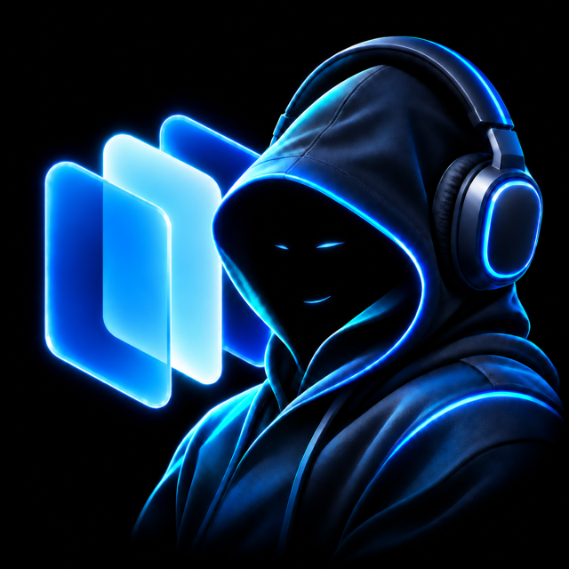

Ko-fi
binnenkort

De app is gratis en blijft gratis: niets is vergrendeld, iedereen krijgt dezelfde functies en updates. Hij wordt gemaakt door één onafhankelijke ontwikkelaar, in de vrije tijd en op eigen consoles. Heeft hij ooit een van je saves gered, dan betaalt een kleine bijdrage testconsoles, schijven en gereedschap. Echt bedankt.
binnenkort
binnenkort
cadeaukaarten, abonnementen, hardware
Een cadeau gevenCrypto: stuur alleen via het netwerk onder elke code, anders gaat de overdracht verloren.
Bitcoin
16J2KqxzzAwqrbdtsBAXLcfXySH3WEqvasEthereum (ERC20)
0xc8bdccce6d52570e059f58f0f4c5c6199bee298dBNB Smart Chain (BEP20)
0xc8bdccce6d52570e059f58f0f4c5c6199bee298dSolana
EyiGLmxw1b1AZxhVmpfP4cXYGTDuYJaWXonvKww2hDaD
PS5 Center is een breder toekomstig project waarvan de reikwijdte en routekaart samen worden uitgewerkt; het is niet beperkt tot game- en appbeheer en is nog niet ontwikkeld.

PS5 Connector onderzoekt uitbreiding van consoles via connectoren en bestaande oplossingen. NAS, gedeelde mappen en USB zijn voorbeelden, geen vaste afbakening. Er is geen prototype of datum aangekondigd.